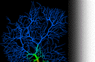

|  | ||
Inhibitory Network ModelDownload the 'GENESIS' scripts for this model (tar-file)You can dowload the 'Genesis' scripts used to simulate a one- or two-dimensional network of inhibitory neurons (Maex and De Schutter 2003). After untarring (tar -xvf inhibitory_network.tar Although online graphical inspection of a running simulation is possible, we recommend to display the output spike trains (produced by spikehistory objects) offline with a graphical tool such as the xplot program available in the subdirectory src/contrib/xplot of the Genesis2.2.1 release. |
||
|
Page last updated on Tuesday, 01-Jun-2004 09:13:52 CEST © BBF 1998 all rights reserved |
|
about us publications models servers courses search contact software lab only home Please send comments and suggestions to Mike Wijnants. |